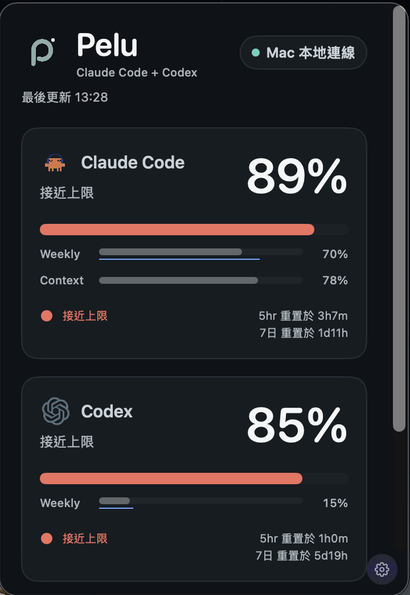
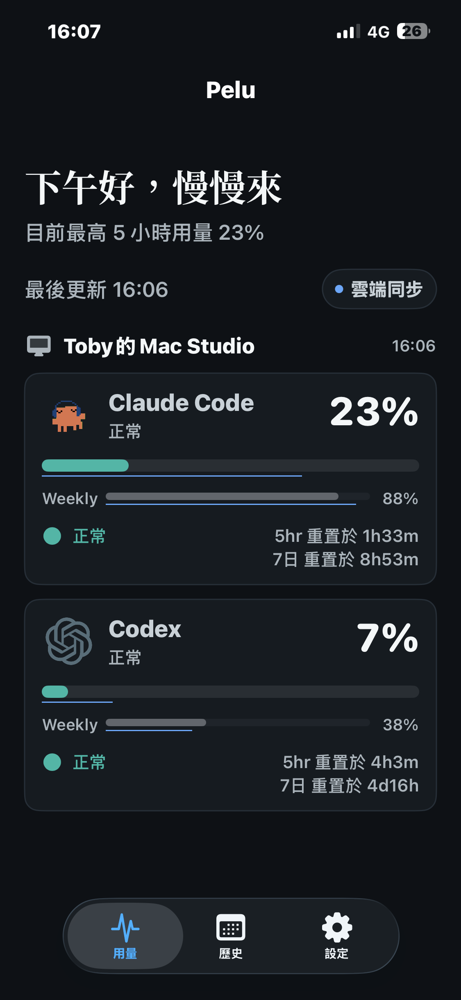
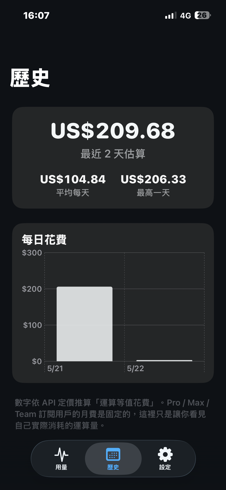

Mac 選單列常駐
永遠顯示 Pelu logo，可選擇同時顯示 Claude % / Codex %。點開 popover 仍以這台 Mac 讀到的最新用量為主。
p
C 89% · X 85%
把 Claude Code 與 Codex 的即時用量同步到 iPhone、Widget 與動態島。資料只存在你自己的 iCloud。
Pelu 把 Mac 上 Claude Code 與 Codex 的即時用量， 同步到你的 iPhone、Widget 與動態島。 無伺服器、 無帳號、 無配對——資料只存在你自己的 iCloud。


特色
專為 Apple ecosystem 打造。從 Mac 選單列、iPhone 主畫面、Widget，到鎖屏的 Live Activity， Pelu 把 Claude Code 與 Codex 的真實用量，鋪成一張柔和、可讀、會呼吸的儀表板； 多台 Mac 也自動整合為最近更新的一份用量。
永遠顯示 Pelu logo，可選擇同時顯示 Claude % / Codex %。點開 popover 仍以這台 Mac 讀到的最新用量為主。
同一個 Apple ID 下的多台 Mac 自動加入。iPhone 只顯示最近更新的用量，裝置清單留在設定中查看。
小 / 中尺寸 Widget；Dynamic Island 同時呈現 Claude 與 Codex 進度；鎖屏 Live Activity 直接看倒數。
App 沒有自家資料伺服器、沒有帳號、沒有第三方追蹤。用量資料只存在你自己的 iCloud,我們看不到。
每天一筆 entry，存於 App Group 容器；Swift Charts 直條圖，並以 day-over-day delta 計算每日花費。
5h 用量超過 90% 自動提醒；依下次 resetDate 排程重置通知，避免錯過視窗。
Dashboard
用量、花費估算、5 小時 / 7 日重置倒數，一張卡片講完。 倒數與週期進度會隨時間自動更新。 無論你在哪台 Mac 工作，開啟 App 就是最近同步的用量狀態。

運作方式
你的用量從正在使用的 Mac 直接同步到 iPhone,中間只經過你自己的 iCloud。 我們既看不到、也不持有任何資料——因為 Pelu 根本沒有伺服器。
你使用 Claude Code 或 Codex,它們各自留下用量數字。
選單列的 Pelu 以這台 Mac 讀到的最新數字為主。
只有你的 Apple ID 看得到。我們沒有任何途徑能讀。
多台 Mac 的資料整合後，只顯示最近更新的用量。
同步靠 Apple iCloud,完全不會經過我們。
同帳號的 Mac 列在設定中,主畫面只看最新用量。
兩台裝置登入同一個 Apple ID 即可,零設定。
隱私
Pelu app 沒有自家資料伺服器、沒有帳號系統、沒有任何第三方追蹤。 你的用量、花費、Mac 名字,通通只在你的裝置與你自己的 iCloud 之間流動,我們看不到。
完整隱私政策App Store 隱私標籤申報為「Data Not Collected」。Pelu 不會把資料傳給我們或第三方。
支援的 AI 工具
Claude Code 由 Pelu 安裝的 statusLine hook 讀取命令列版本;Codex 則直接連到官方 quota 取得 5 小時 / 7 日用量,讀不到時退回本機 session 紀錄估算。Pelu 為你呈現用量、花費、與重置倒數。
第一次啟動時,Pelu 會請你同意安裝一個輕量 statusLine hook,之後就會自動讀到 5 小時與 7 日的 Claude Code 用量,不用手動刷新。
優先讀取 Codex 官方 quota(可使用 Codex 桌面 app 內附的 binary,不需另裝 CLI),給你 5 小時 / 7 日的精準百分比與 reset 倒數;讀不到時自動退回本機紀錄估算。
常見問題
是。Pelu 沒有任何伺服器,你的用量資料只放在你自己的 iCloud,只有你的 Apple ID 看得到。我們既看不到、也不持有任何使用者的資料。
不用。Mac 與 iPhone 各下載一次 Pelu,登入同一個 Apple ID,就會自動同步。我們沒有帳號系統。
Pelu 預設你可能用同一個帳號在多台 Mac 工作。iPhone、Widget 與動態島會整合顯示最近更新的用量,不會分成多份；你仍可在設定的裝置列表查看已加入的 Mac。Mac 選單列則維持顯示該台 Mac 本機讀到的最新用量。
第一次啟動時,Pelu 會請你同意安裝一個輕量的 Claude Code statusLine hook(只是寫入用量數字,不會接觸對話內容);Codex 則自動連到桌面 app 或 CLI 提供的官方 quota。同意完之後,你只要繼續工作就好,Pelu 會在背景安靜地把最新數字同步到 iPhone。
佔用量極少。Pelu 只存放純文字的用量數據,單台 Mac 的資料通常不超過幾十 KB,對你的 iCloud 儲存空間幾乎沒有影響。
不會。Pelu 在背景以極低頻率讀取本機的用量紀錄,CPU 與記憶體佔用幾乎可以忽略,對電池也沒有明顯影響。
iOS 版目前限時免費下載。Pelu 沒有訂閱、沒有廣告;Mac 搭配元件維持免費下載。
把 Pelu 安裝在你的 Mac 與 iPhone 上。用一個下午設定， 然後你會發現再也不用切視窗去查 Claude Code 還剩多少額度。
iOS 1.0.0 已可用,支援 Dashboard、Widget 與 Live Activity。Mac 搭配元件負責讀取 Claude Code / Codex 用量並透過你自己的 iCloud 同步到 iPhone;若尚未安裝 Mac 端,iPhone 會停在等待同步狀態。
目前 iOS 版限時免費下載。
iOS 限時免費下載 · Mac 搭配元件免費下載
注意事項